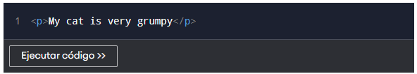

Introducción
Supongamos que tienes que crear una página web con un encabezado y un párrafo como este:
Primero, crearemos esta estructura usando sólo texto simple.
Puedes ver que no obtenemos el resultado deseado.
Con solo texto plano, el navegador no distingue qué contenido es un encabezado y cuál un párrafo. Por eso, ambos textos aparecen en la misma línea.
Para crear dicha estructura, utilizamos etiquetas HTML, que exploraremos a continuación.
Etiquetas HTML
Las etiquetas HTML proporcionan información al navegador sobre cómo estructurar el contenido.
Por ejemplo, la <p> etiqueta informa al navegador que el contenido es un párrafo.
De igual forma, <h1> se utiliza para definir un encabezado.
<h1>This is a Heading</h1>
<p>This is a paragraph.</p>Ejecute este código y vea el resultado usted mismo.
Etiquetas de apertura y cierre
Las etiquetas HTML suelen venir en pares y se encierran entre corchetes angulares <>. En el código anterior:
<h1>indica el inicio de un encabezado 1, e</h1>indica el final.<p>indica el comienzo de un párrafo, e</p>indica el final.

Nota: Hay muchas etiquetas en HTML, algunas de las cuales se usan de forma ligeramente diferente. Las abordaremos gradualmente a lo largo de este curso.
Elementos HTML
Un elemento HTML incluye una etiqueta de apertura, contenido y una etiqueta de cierre.

Etiqueta vs Elemento
Una etiqueta es solo la parte entre <>, mientras que un elemento HTML incluye también el contenido.
Ejemplo simple
<p>¡Hola mundo!</p>
En este ejemplo, <p> es la etiqueta de párrafo y "¡Hola mundo!" es el contenido.

Resumen
- Las etiquetas HTML definen el contenido de la página.
- Un elemento HTML incluye etiqueta de apertura, contenido y etiqueta de cierre.
- Algunas etiquetas no tienen cierre (por ejemplo, <br>).